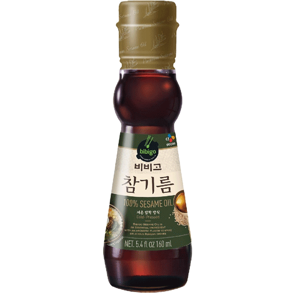
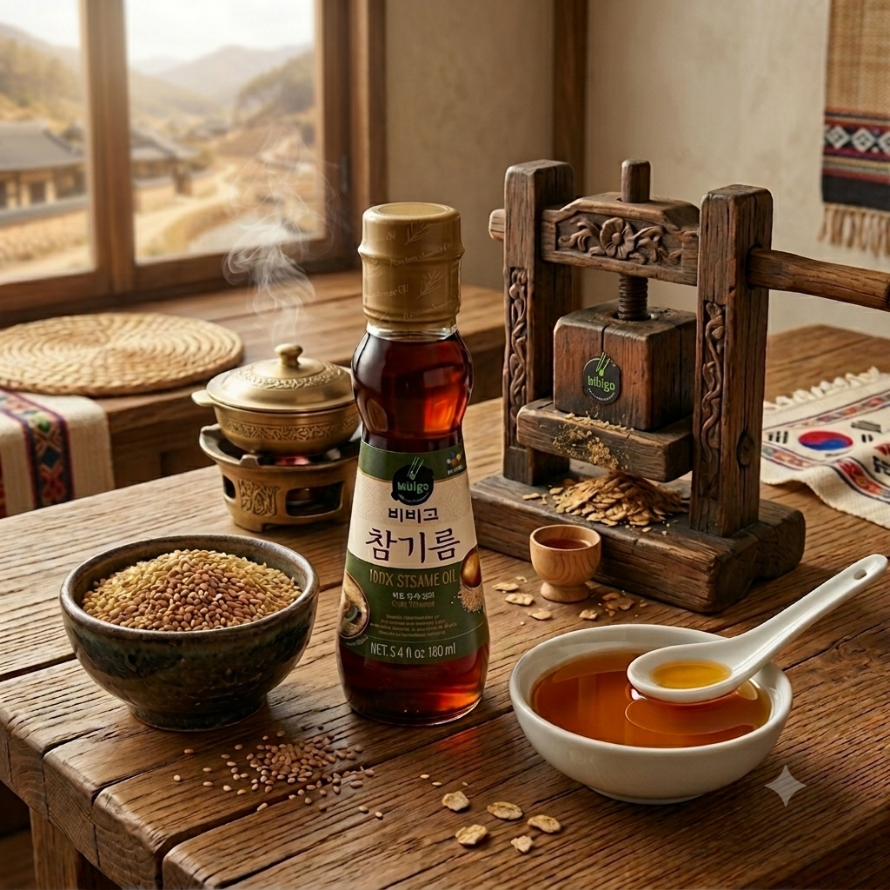
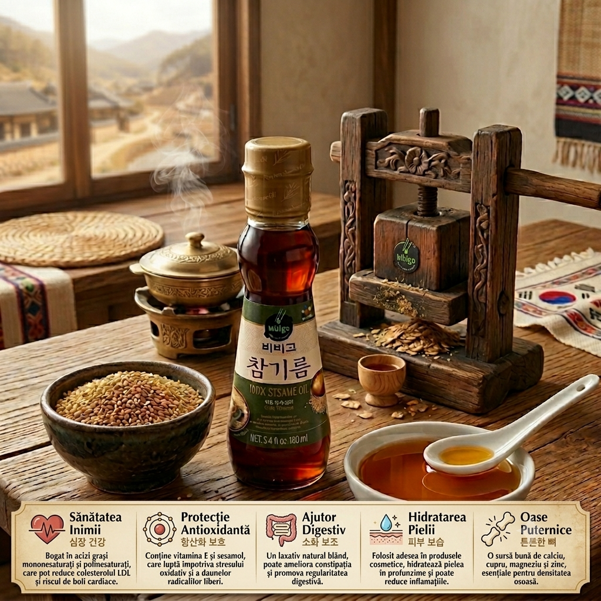

<div> <table style="border-collapse: collapse; width: 99.9809%;" border="1"><colgroup><col style="width: 49.9522%;"><col style="width: 49.9522%;"></colgroup> <tbody> <tr> <td> <div><span style="font-size: 14pt;"><strong>Bibigo <span>Ulei de susan</span></strong></span></div> <div><span style="font-size: 14pt;"><strong>160ml</strong></span></div> <div><span style="font-size: 14pt;">Uleiul de susan 100% pur Bibigo aduce secretul aromelor asiatice direct in bucataria ta! Presat la rece pentru a-si pastra notele bogate de nuca si parfumul intens, acest ulei premium este ideal pentru a desavarsi preparate asiatice, salate sau sosuri, oferindu-le un gust autentic si irezistibil.</span></div> </td> <td></td> </tr> <tr> <td></td> <td><span style="font-size: 14pt; color: #000000;">Obtinut prin tehnica presarii la rece, acest ulei pastreaza intact sufletul si esenta semintelor de susan rumenite. Vizualul inspirat de presele traditionale coreene iti vorbeste despre respectul pentru calitate, oferindu-ti acea textura fina si acele note bogate de nuca, esentiale pentru a desavarsi orice preparat autentic.</span></td> </tr> <tr> <td><span style="font-size: 14pt;">Dincolo de aroma sa profunda si inconfundabila, fiecare picatura de ulei de susan Bibigo aduce un plus de vitalitate meselor tale. Bogat in antioxidanti naturali precum sesamolul, acest ulei protejeaza inima, reduce inflamatiile si sustine sanatatea intregului organism, transformand mancarea ta preferata intr-un aliat pentru starea de bine.</span></td> <td></td> </tr> </tbody> </table> </div>